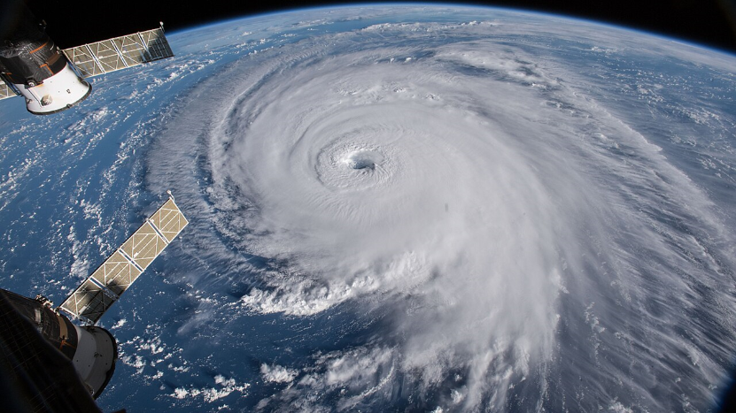
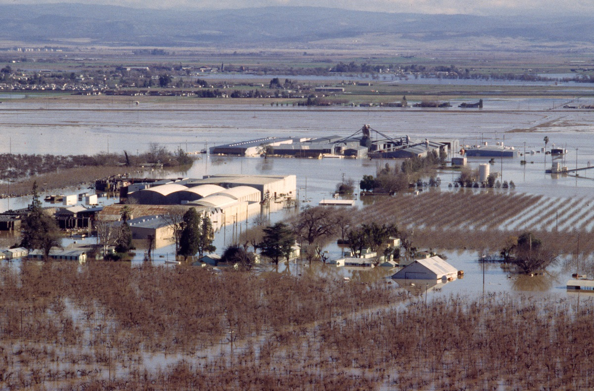
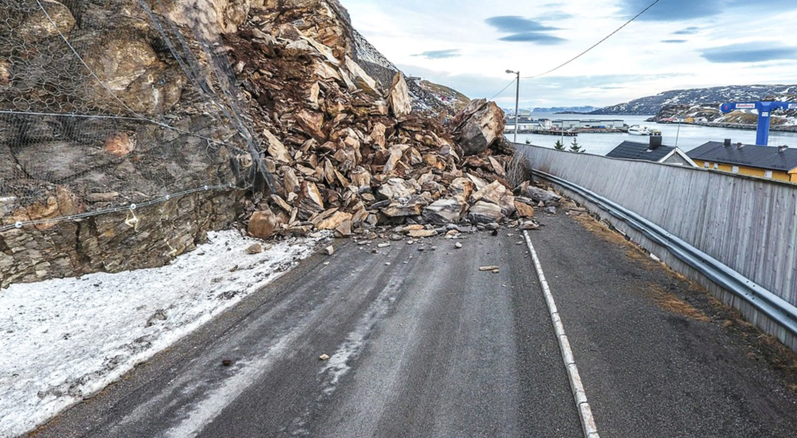
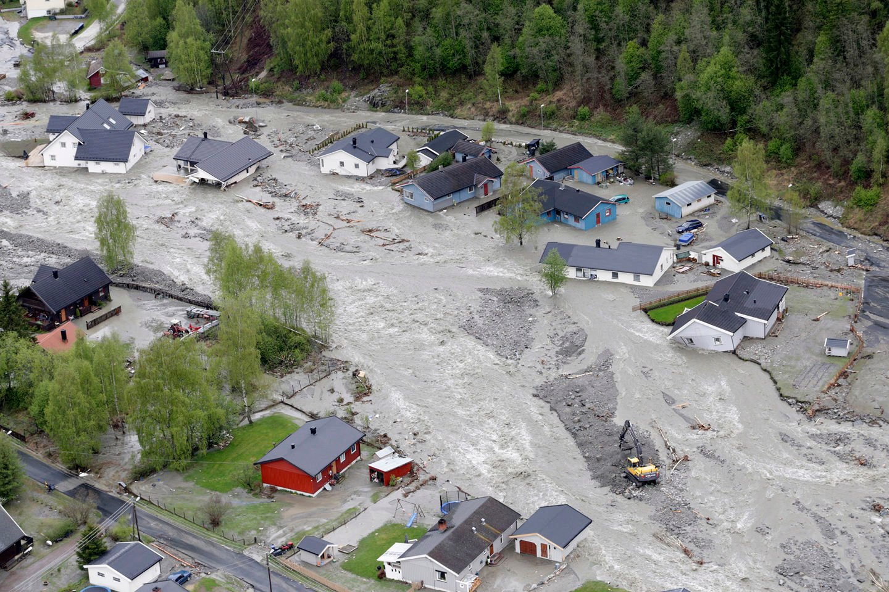
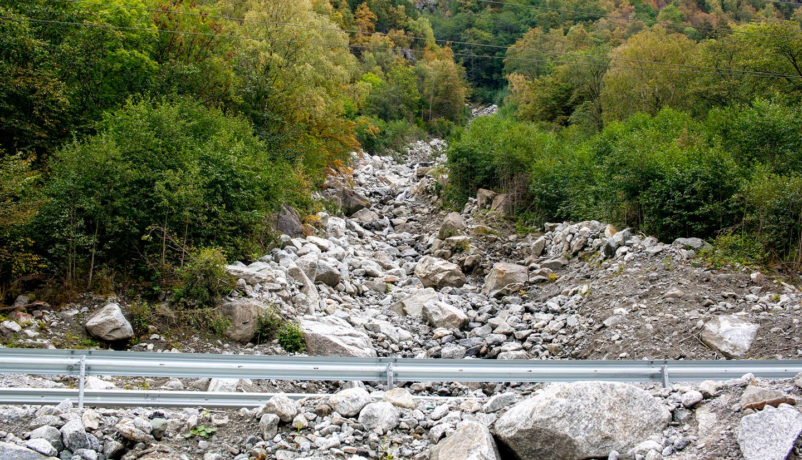
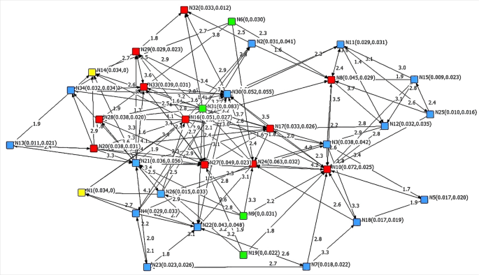

Natural Hazards
Infrastructure Challenges
My research addresses the growing challenges posed by natural hazards to infrastructure systems and communities. From hurricanes and flooding to landslides and tornadoes, I develop data-driven solutions to enhance resilience and protect vulnerable populations from disaster impacts.

Hurricane Risk Assessment

Flood Hazard Mapping

Severe Weather Prediction

Landslide & Geohazards

Urban Flood Resilience

Infrastructure Vulnerability

Network Resilience Analysis
Coastal & Water Systems